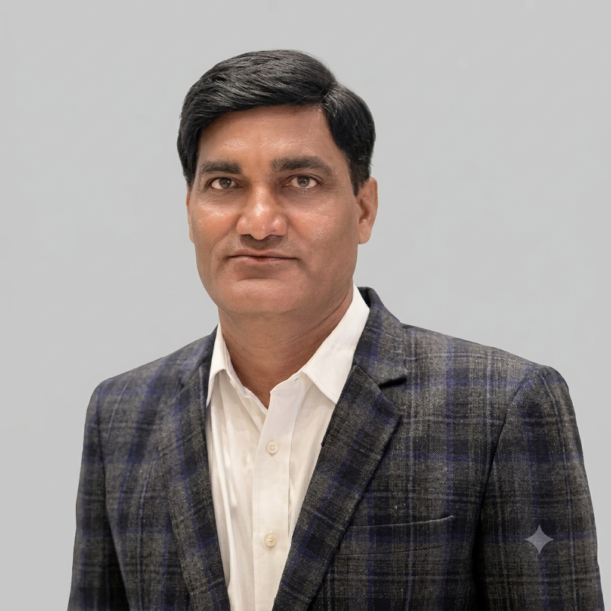

Chief Scientist & Professor (AcSIR) · CSIR-Central Building Research Institute, Roorkee
Research, development, innovation and sensitization for safer, faster and more affordable construction, from full-scale structural testing and 3D concrete printing to heritage conservation and post-disaster reconstruction.